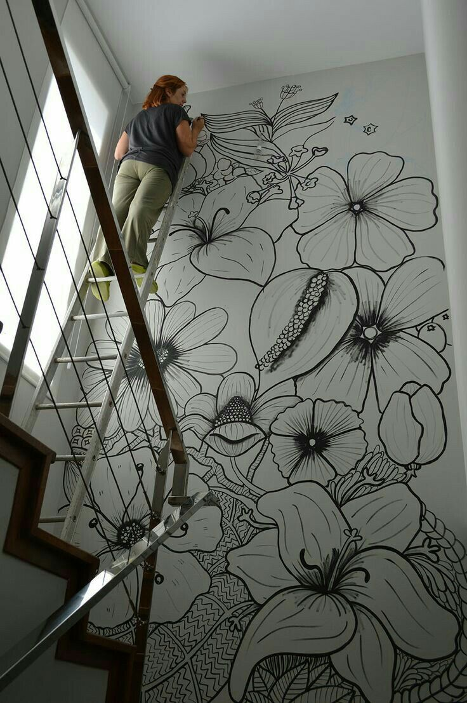
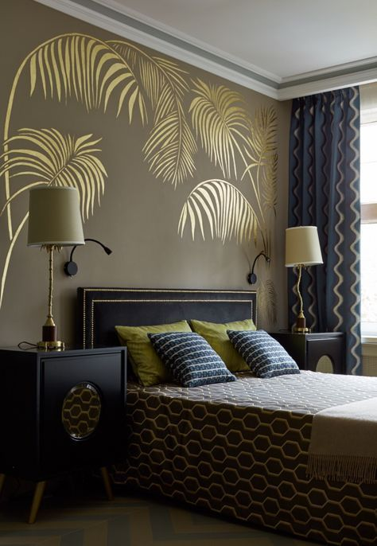

    <section class="u-section-7">
      <div class="u-sheet-1">
        <div class="u-layout-wrap-1">
          <div class="u-layout">
            <div class="u-layout-row">

                <div class="u-container-layout col-xs-8 col-sm-6 col-md-3">
                  <h1 class="u-text-1"> COMBINACIONES DE DISEÑOS DE PAREDES </h1>
                  
                </div>

                <div class="u-container-layout col-xs-8 col-sm-6 col-md-3">
                  
                </div>

                <div class="u-container-layout col-xs-8 col-sm-6 col-md-3">
                  
                  <h1 class="u-text-3"> COMBINACIONES DE COLORES Y LIENSOS PARA UN DORMITORIO</h1>
                  <p class="u-text-2">Si nuestra casa es pequeña, lo ideal es optar por colores para interiores que ayuden a que la luz natural se disperse fácilmente en todos los rincones. Observa cuidadosamente cuál es la pared que recibe la mayor cantidad de luz en tu hogar (no siempre es la pared de la ventana) y píntala con pintura blanca o beige. Las paredes alrededor podrán ir en otros tonos buscando ante todo la armonía en el ambiente.</p>
                </div>

            </div>
          </div>
        </div>
      </div>
    </section>
